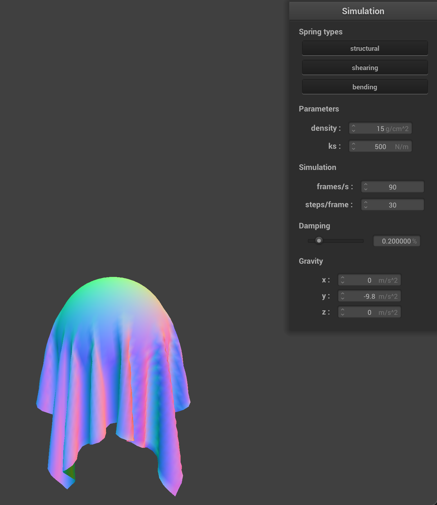
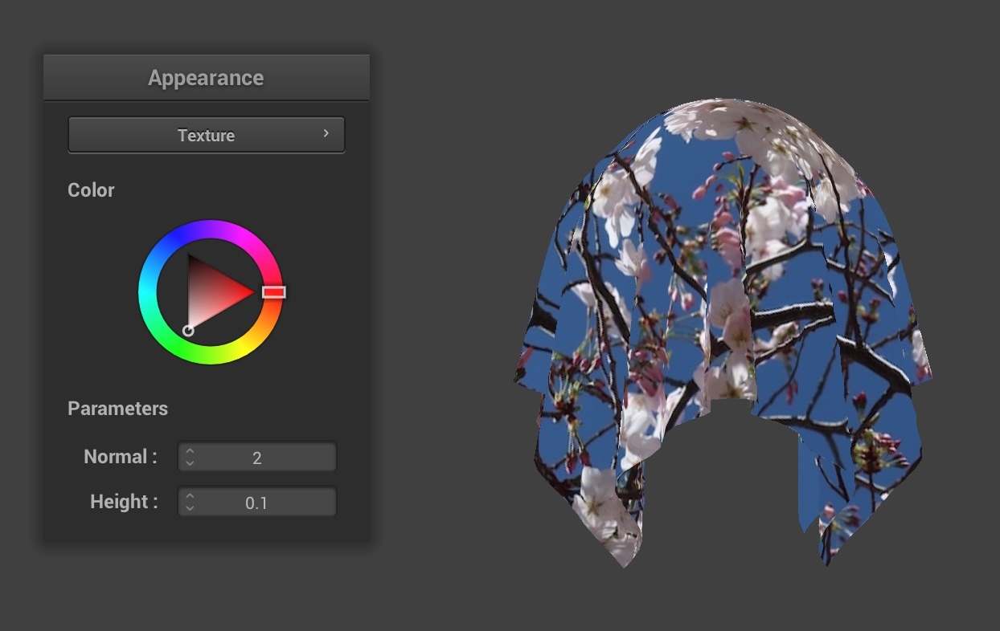

CS184/284A Spring 2025 Homework 4 Write-Up
Names: Annabel Ng (3038330323) and Henry Ko (3034941989)
Link to webpage: cal-cs184-student.github.io/hw-webpages-totoro-page/hw4
Link to GitHub repository: github.com/cal-cs184-student/sp25-hw4-totoro-4/

Overview
In this homework, we explored how to develop a cloth model for simulation from the ground up. This involved figuring out how to represent the cloth itself and how to simulate its motion and behavior under physical parameters. We also explored how to handle collisions with other objects and self-collisions, as well as how to enhance the visual representation of the cloth using shaders. Overall, this homework was a great introduction to simulation, and we realized how even the most simple motions, like a cloth falling onto a sphere, involves a lot of different components and considerations in order to make it look physically realistic.We started with first implementing a simple grid of masses and springs to create a wireframe representation of cloth. This was surprisingly more involved than we thought at first glance, since there were three different types of constraints and conditions we had to account for, including shearing, structural and bending constraints. In addition, we originally tried to add the springs alongside point masses into the grid, but this messed up our indexing and led to a lot of confusion, so we ended up adding the springs after we had all the point masses in place.
We then implemented numerical integration to simulate the cloth's motion and behavior under various physical parameters like spring constant, density, and damping. We looked at external forces like gravity and spring correction forces which keep the cloth together. We computed the total force acting on each point mass based on these external and spring forces with Hooke's Law and applied Verlet integration to update the positions of the point masses over time. We also corrected the point mass positions to prevent unreasonable spring defromation. This part was mostly straightforward: we just had to make sure we were very careful with the order we were updating the positions and velocities of the point masses.
Next, we handled collisions with other objects like spheres and planes and the cloth itself, and observed how changing the different parameters created different simulations of collisions. We first checked to see if a pointmass would intersect or lay inside the sphere, then calculate the tangent point on the surface, and figure out how to correct the point mass position to bump it to the tangent point. For computing intersections with planes, we had to check if the point mass was below the plane's height (with a dot product instead of the Euclidean norm like in sphere collision) and adjust its position accordingly. We had to make sure we were accounting for the surface offset when computing the tangent point, and followed the same steps of bumping it back up to the surface of the plane.
Implementing self collision was probably the most complicated out of the three collision types since there were a lot of moving parts involved. We implemented a few helpers to first compute a hash key based on the point mass 3D position and converting the point mass position into membership in some 3D box volume. We used these hash positions to build a spatial map of the point masses, and then iterated through each point mass to check for collisions with other point masses in the same spatial map cell. We computed the correction vector necessary to set the pairwise distance between colliding point masses to be equal to twice the thickness of the cloth, and averaged out the corrections to apply to each point mass by the number of corrections and the simulation steps. Implementing this logic took quite a bit of time and thought since we had to properly initialize the spatial map in order to check for collisions correctly, and also to ensure that we were only checking for collisions with other point masses that were not the same as the current one. We also had to be careful with how we applied the corrections to avoid infinite loops of self-collisions.
Finally, we explored developing vertex and fragment shaders in
GLSL to enhance the visual representation of our cloth. We implemented diffuse shading, Blinn-Phong shading, texture mapping, displacement / bump mapping, and mirror reflections. We also struggled with some of the shader logic, especially with getting the normals and light direction right for the mirror model and displacement model, which involved a lot of staring at the code and debugging. We ran into a major bug for our displacement code where the displacement was not working correctly on the sphere and it looked too smooth, and it took us a while to realize that we were not properly transforming the position into world space. Shoutout to the student on Ed for helping us to figure it out! Overall, this part was a great introduction to shaders and how they can be used to create more realistic visual effects in computer graphics.
Part 1: Masses and springs
We built out our grid of masses and springs to create our cloth wireframe.|
|

|

|

|
Part 2: Simulation via numerical integration
Experiment with some the parameters in the simulation. To do so, pause the simulation at the start with P, modify the values of interest, and then resume by pressing P again. You can also restart the simulation at any time from the cloth’s starting position by pressing R.Describe the effects of:
ks; how does the cloth behave from start to rest with a very low ks? A high ks? When there's a very low
ks=500, the cloth seems a lot more soft and flexible with a deeper drape and it has more motion as it's falling as well. When there's a very high ks=50000, the cloth seems extremely stiff and barely creases in on itself and has a very small drape as well. It just seems to be made of a much thicker material that doesn't fold as easily. | ks = 500 | ks = 500 | ks = 50000 | ks = 50000 |
|---|---|---|---|

|

|
|

|
density?
When the density is low(density=1), the cloth gives the impression that its light-weight as it's seen be being less droopy in its resting state. However, when the density is set to a high value(density=10,000), the cloth feels heavy as it can be seen with a large droop in its final resting state.
| density = 1 | density = 1 | density = 10,000 | density = 10,000 |
|---|---|---|---|
|
|
|
|
|
damping?
When the damping percentage is low(0.10), the cloth drops quickly with little resistance, but when the damping percentage is high(0.90), the cloth falls slowly and gradually.
| damping = 0.10 | damping = 0.10 | damping = 0.90 | damping = 0.90 |
|---|---|---|---|
|
|
|
|
|
- 1. Spring Constant(ks)
|
|
|
- 2. Density
|
|
|
- 3. Damping
|
|
|
Show us a screenshot of your shaded cloth from scene/pinned4.json in its final resting state! If you choose to use different parameters than the default ones, please list them.
Part 3: Handling collisions with other objects
Describe your implementation of handling collisions with spheres and planes.For handling collisions with spheres, we code up the
Sphere:Collide function to first calculate the distance between the given PointMass position and the sphere's center by subtracting the sphere's center from the PointMass position and taking the norm as the distance. If the computed distance is less than the sphere's radius, this indicates that the PointMass lies inside the sphere's radius. Since we only care about the PointMass that lie inside the sphere's radius, we then compute the tangent point on the surface of the sphere by adding the unit direction between the sphere and the PointMass scaled by the size of the radius. Once we have this tangent point, we calculate the correction vector as the difference between this tangent point and the last position of the PointMass. We then apply this correction vector to the PointMass position by setting the position to be the last position plus the correction vector multiplied by (1-friction) to account for the friction of the collision, essentially bumping up the position of the PointMass up to the surface of the sphere.
For handling collisions with planes, we code up the
Plane:Collide function to check if the PointMass is below the plane's height by taking the difference between the PointMass's position and the plane's given point, and checking if the dot product of this difference with the plane's normal is less than the SURFACE_OFFSET. If it's less than the offset, this indicates that the PointMass is below the plane's height and we need to adjust it. To do this correction, we compute the tangent point on the plane by subtracting the normal direction of the plane, scaled by the distance to the plane adjusted by the offset, from the PointMass's position. Similar to the sphere collision, we calculate the correction vector as the difference between the tangent point and the PointMass's last position. We then apply this correction vector to the PointMass position by setting the position to be the last position plus the correction vector multiplied by (1-friction) to account for friction of the collision.
In addition, we also modify the
Cloth::Collide code to iterate through all the PointMass object, and in each iteration, we iterate through every CollisionObject and check for collisions with the PointMass object.
Show us screenshots of your shaded cloth from scene/sphere.json in its final resting state on the sphere using the default ks = 5000 as well as with ks = 500 and ks = 50000. Describe the differences in the results.
|

|

|
|
As the ks increases, the cloth seems to be much more stiff and rigid and less likely to drape softly over the sphere. The cloth with
ks = 500 is much more flexible and drapes over the sphere more naturally and molds over the sphere like a very thin flexible cloth, while the cloth with ks = 50000 is very stiff and doesn't mold to the sphere's shape as much and appears to extrude out more. The cloth with ks = 5000 is somewhere in between, with a moderate amount of drape and stiffness.
Show us a screenshot of your shaded cloth lying peacefully at rest on the plane.

|
|
Part 4: Handling self-collisions
Describe your implementation of handling self-collisions.To handle self-collision, we first write a helper function
Cloth::hash_position which hashes a given 3D position into a unique float based on membership in a 3D boxes with dimensions w = 3 * width / num_width_points, h = 3 * height / num_height_points, and t = std::max(w, h). We then "snap" the pointmass to the nearest box by taking the fmod of the position's x, y, and z coordinates with respect to the box dimensions and subtracting the fmod value from the position coordinate to get the box coordinates. We then combine these box coordinates into a unique float hash value by setting the hash = snapped_x + width * (snapped_y + height * snapped_z)
Next, we wrote a function to actually build the spatial map out of all the point masses by iterating through each point mass, computing the hash based on the point mass position, checking if the hash is already in the spatial map, and if not, adding it to the spatial map.
Then, we wrote the
Cloth::self_collide function to iterate through all the point masses, check for collisions with other point masses in the same spatial map cell, and determine the average correction amount. We first calculate the hash of that position and check if there are any other point masses in the same cell. We initialize a total_correction vector and a corrections counter, and iterate through each candidate point mass and check if the candidate is not the same as the current point mass. If they are not the same, we calculate the distance dist between the given point mass and the candidate by subtracting their positions and taking the norm. If the distance apart is less than 2*thickness, we want to find the correction vector necessary to set the pairwise distance to be equal to 2*thickness apart. We do this by taking the unit direction between the two point masses, and scaling this direction by 2*thickness - dist, which becomes our curr_correction vector. We then add this correction vector to our total_correction vector and increment our corrections counter. After iterating through all the candidates, we check if there are any corrections, and if there are, we divide the total_correction vector by the corrections counter and simulation steps and apply this average correction to the current point mass's position by incrementing the position by the average correction vector.
Lastly, we modified the
PointMass::Collide function to check for self-collisions by building the spatial map, and then iterating through the all of the point masses and calling self_collide to check for self collision.
Show us at least 3 screenshots that document how your cloth falls and folds on itself, starting with an early, initial self-collision and ending with the cloth at a more restful state (even if it is still slightly bouncy on the ground).

|

|
|

|
Vary the density as well as ks and describe with words and screenshots how they affect the behavior of the cloth as it falls on itself.
On a high level, density controls how fast the cloth falls along with how many small creases there are. A more dense cloth will fall faster and will yield a higher number of smaller folds(i.e. higher tendency of self collisions). Meanwhile, ks will control how stiff the cloth is to folding. A higher ks value will result the cloth resisting to having many folds.
Below is a chart of varying density and ks. We can see that a low density and low ks(lower-left) results in a light-weight cloth that folds well. But if we increase the ks value to 9,000(upper-left), we can see the cloth is "resisting" folds, hence resulting in only a few large folds. On the other side of the spectrum we can see that a high density and high ks(upper-right), will result in a cloth that is heavy(i.e. falling fast) and more rigid.
| Increasing ks → | density = 1 | density = 15 | density = 50 | |
| ks = 9,000 |
|
|
|
|
| ks = 5,000 |
|
|
|
|
| ks = 1,000 |
|
|
|
Part 5: Shaders
Explain in your own words what is a shader program and how vertex and fragment shaders work together to create lighting and material effects.A shader program is a specialized program made to run on the GPU in parallel. The main purpose is to compute how geometry is rendered on the screen quickly. There are two parts to a shader--the vertex shader and fragment shader. The vertex shader transforms the 3D positions of each vertex on the mesh from model space into screen space using transformation matrices. It also passes information like normals or positions as output. The outputs of the vertex shader are used as inputs to the fragment shader where it runs for each pixel that is part of the final rendered triangle. It is reponsible for getting the right lighting, color, and texture, which is why its result is "out_color" that determines the final color on our screen.
Explain the Blinn-Phong shading model in your own words. Show a screenshot of your Blinn-Phong shader outputting only the ambient component, a screen shot only outputting the diffuse component, a screen shot only outputting the specular component, and one using the entire Blinn-Phong model.
The Blinn-Phong shading model combines ambient light component, diffuse light component, and specular light component to get the final light or color value. The ambient light can be seen as the default level of light there is and is set to a small constant value. We used a ambient light value of 0.1 to ensure that it's not zero, but very small so that it does not interfere too much with diffuse light and specular light. Next, diffuse light is essentially how much light hits the surface since it's the dot product between the normal vector to the surface and light direction. This means that diffuse light is strongest when the light source is directly facing the surface. Finally, the specular light component is responsible for determining how "shiny" the surface is, such as a metallic surface. And together, all-combined, we get the final Blinn-Phong shading model.
|
|
|
|
|
|
Show a screenshot of your texture mapping shader using your own custom texture by modifying the textures in /textures/.


Custom Texture After
Show a screenshot of bump mapping on the cloth and on the sphere. Show a screenshot of displacement mapping on the sphere. Use the same texture for both renders. You can either provide your own texture or use one of the ones in the textures directory, BUT choose one that’s not the default texture_2.png. Compare the two approaches and resulting renders in your own words. Compare how your the two shaders react to the sphere by changing the sphere mesh’s coarseness by using -o 16 -a 16 and then -o 128 -a 128.
Below is a table displaying the changes in appearance of the sphere when using Displacement or Bump Mapping. For bump mapping, we used a normal of
2 and a height of 1. For displacement, we used a normal of 100 and a height of 0.02. With increased mesh coarseness, we see a noticeable difference in Displacement mapping whereas there is not noticeable difference for Bump mapping. Specifically, the outskirts of the sphere are shown as more rough when we increase the mesh coarseness for Displacement mapping(lower-left).
The reason behind this is that Bump mapping only gives us the illusion of detail on an object by only modifying it normal vectors. However, in displacement mapping we are modifying the position of the vertices along with the normals. This change allows Displacement mapping to closely reflect the true details of a given texture especially when we get to work with coarser meshes(e.g. -o 128 -a 128).
| Displacement | Bump |
|---|---|
|
|
|
|
|
|
Show a screenshot of your mirror shader on the cloth and on the sphere.
| Sphere Only | Cloth on Sphere |
|---|---|
(Optional) Part 6: Extra Credit - Additional cloth simulation features!
-
1. Dynamic Wind feature
We included a wind feature by adding a new force to all our point masses in Part 2. To give it a dynamic effect, we made this a spatially varying force by changing the amount of force added to a point mass depending on the total simulation steps and it's current x,y,z position. Specifically, we created a
spatial_coeff = pm.position.x*0.3 + pm.position.y*0.2+pm.position.z*0.4. along with total_simulation_steps, which is a new
static variable that accumulates delta_t. We then create a new force wind=Vector3D(0.8*total_simulation_steps+spatial_coeff, 0.2*sin(total_simulation_steps+spatial_coeff), 0.2*cos(total_simulation_steps+spatial_coeff).
Essentially, we varied the amount of force added according to the position and current time and put cos or sin to give a rhythmical feel.